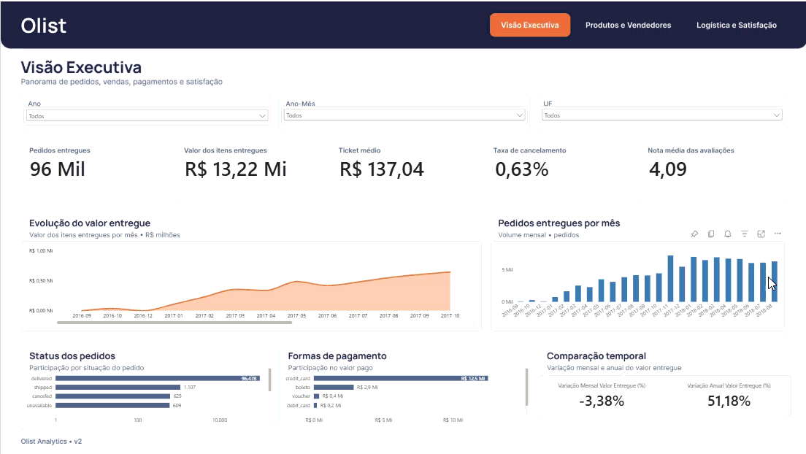
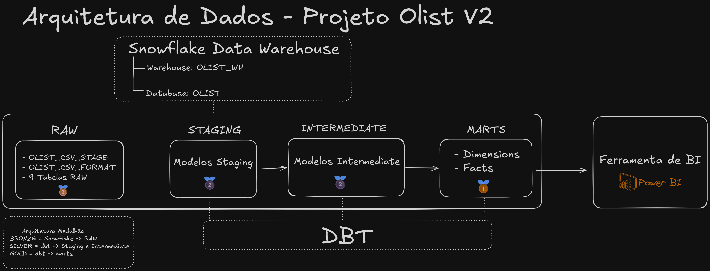
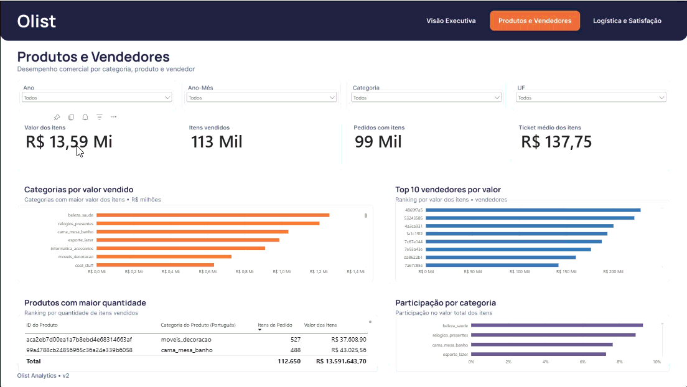
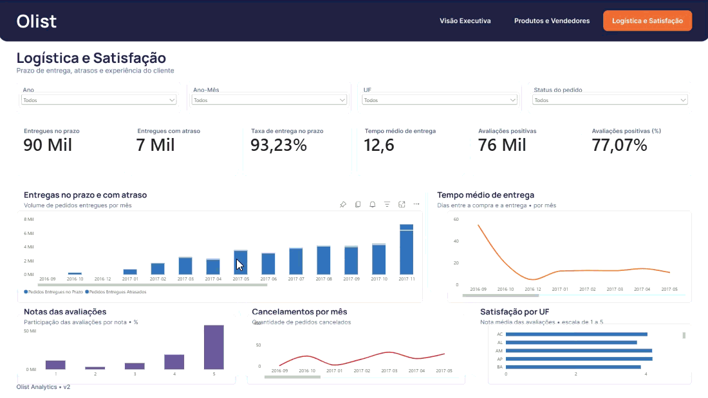

RAW
9 tabelas preservam a estrutura dos arquivos de origem.
Dos CSVs ao Power BI: uma base analítica no Snowflake, transformada, testada e documentada com dbt, com um modelo semântico versionado em Git.
Evolução da versão de Análise de Dados, com foco na confiabilidade e na organização da camada analítica.

9 arquivos CSV
8 marts no Snowflake
3 páginas no Power BI
O projeto transforma o Brazilian E-Commerce Public Dataset by Olist em dados organizados para acompanhar pedidos, produtos, vendedores, logística e satisfação dos clientes.
O cenário utiliza dados públicos históricos para fins de portfólio; não representa uma prestação de serviço à Olist.
Itens, pagamentos e avaliações têm grãos diferentes. Uni-los diretamente por pedido pode multiplicar linhas e inflar os indicadores.
A V2 separa esses processos em fatos e dimensões e explicita as regras de qualidade. Ao combinar medidas por pedido, cada fato de detalhe deve ser agregado antes da união.
Os CSVs são carregados em um stage interno do Snowflake. O dbt organiza as transformações até os marts consumidos pelo Power BI.
9 tabelas preservam a estrutura dos arquivos de origem.
9 views dbt para limpeza, tipagem e padronização dos campos.
Uma view concentra transformações intermediárias de clientes.
4 dimensões e 4 fatos materializados como tabelas.
Modelo Import e relatório versionados em PBIP, PBIR e TMDL.

O modelo dimensional é híbrido: o cabeçalho do pedido se relaciona em 1:N com os detalhes, preservando o grão de cada fato.
fct_orders: uma linha por pedido.fct_order_items: uma linha por item do pedido.fct_order_payments: uma linha por sequência de pagamento.fct_order_reviews: um registro de avaliação da origem, sem presumir unicidade de review_id.Os testes dbt cobrem nulidade, unicidade, relacionamentos e valores aceitos. A documentação registra 56 testes aprovados na execução de 22/10/2026.
O Power BI lê os 8 marts e organiza 35 medidas DAX e 7 relacionamentos ativos. O calendário usa a data da compra; o formato PBIP permite versionar o relatório e o modelo.
Esse resultado corresponde à validação registrada, não a um monitoramento contínuo.
Prévias animadas das três páginas. As interações completas estão disponíveis no Power BI.
Volume de pedidos, valor dos itens e evolução ao longo do tempo.

Categorias, itens comercializados e desempenho dos vendedores.

Prazos de entrega, atrasos e avaliações dos clientes.
A base documentada preserva 99.441 pedidos, 112.650 itens, 103.886 pagamentos e 99.224 avaliações, com fatos separados para evitar duplicações entre processos.
Valor dos itens, frete e pagamentos têm significados distintos. Esses totais não são apresentados como receita líquida sem uma regra de negócio aprovada.
Consulte os modelos SQL, os testes dbt, as decisões de modelagem e os arquivos versionáveis do Power BI.